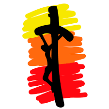

- Juan XXIII; (2015-2018)
- San Bernardo; (2017-2018)
- San Francisco; (2018-ACTUAL)
- Torres; (2018-ACTUAL)
- Villa del Parque; (2018-ACTUAL)
- General Rodriguez;(2018-2019)
- Raffo; (2018-ACTUAL)
- Malvinas; (2018-ACTUAL)
- San Andres de Giles; (2018-ACTUAL)

JUVENTUD MISIONERA - Pilar